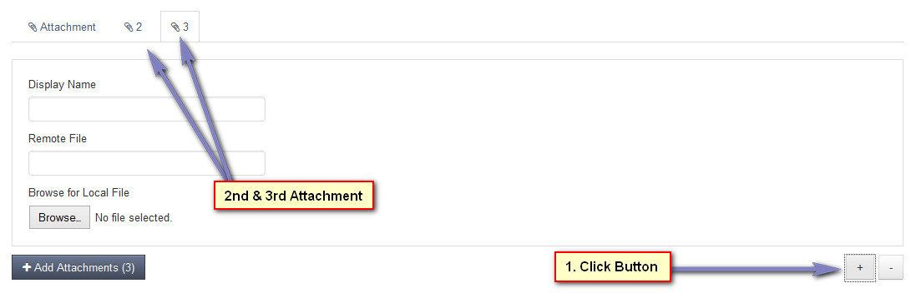
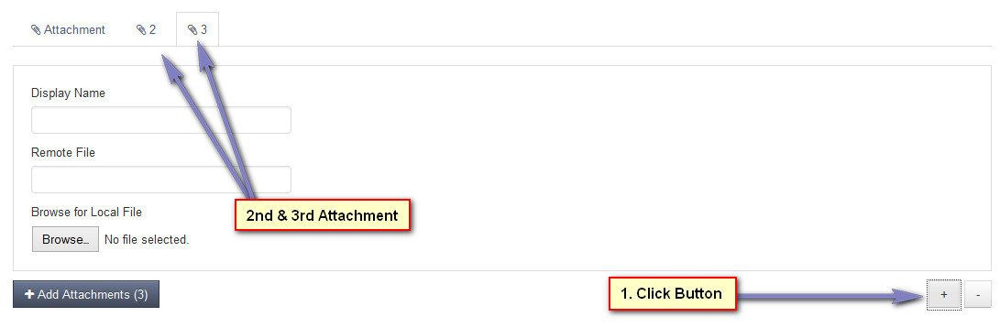

Add Attachments
Overview
Enables Batch adding of attachments. Please read carefully. Click example images to display full size version in new tab/window.
Screenshot
{kind=link}
Attachment Information
Display Name - Display name for attachment. If left blank, attachment file name will be used.
Browse for Local File - Browse for local file on your computer.
Remote File - HTTP or FTP path to remote file on external server or cloud service. Must be publicly accessible. If local file is also specified, remote file will be ignored.
Browse for Local File - Browse for local file on your computer.
Remote File - HTTP or FTP path to remote file on external server or cloud service. Must be publicly accessible. If local file is also specified, remote file will be ignored.
Add / Remove Boxes
The +/- buttons enable you to add more attachments. When you click the + button, a new tab will appear on the tab bar. Click this new tab to complete
attachment information. See the following screenshot:


{kind=link}